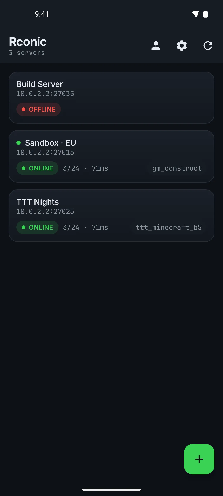
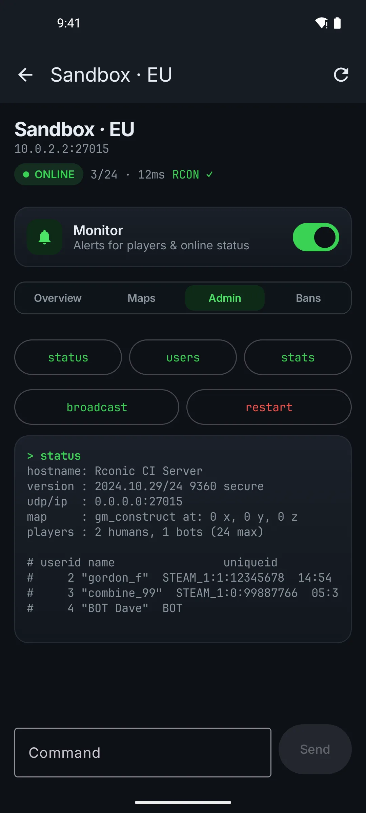
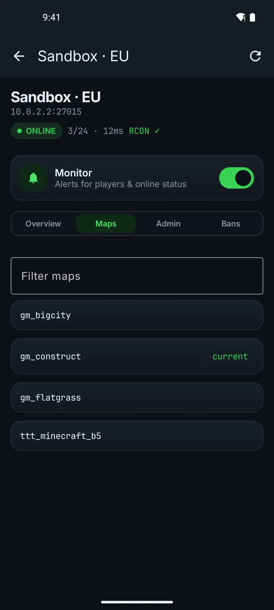
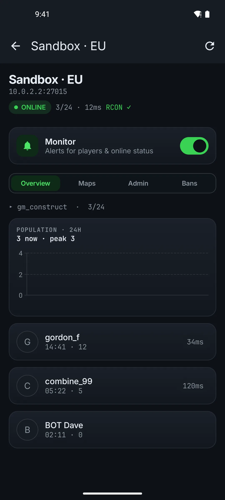
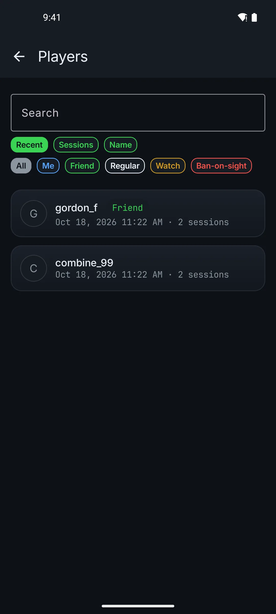

Run your game server from your phone.
See who's playing, run RCON commands, and get a notification the moment your server goes down. For Garry's Mod, Counter-Strike, Team Fortress 2 and other Source games.

A full RCON console in your pocket
Do the admin work you'd normally need a PC for.
- Run any command and see the reply
- One-tap quick commands like status and users
- Broadcast a message to everyone on the server

Change maps and manage players
The everyday jobs, a couple of taps each, with a confirmation before anything runs.
- Search and switch to any map on the server
- Kick or ban a player from the list
- Review and lift bans

Know before your players tell you
Rconic keeps an eye on your servers in the background and notifies you when something changes.
- Alerts when a server goes down or comes back
- Alerts when players join or leave
- A 24-hour population chart for each server

Remember every player
A history of everyone who's played on your servers, kept on your phone.
- When they were last seen and how many sessions they've played
- Your own tags, like Friend, Regular or Watch
- Private notes on anyone

Free to use. Pro when you want it.
Everything for checking and running your servers is free. Rconic Pro is a one-time purchase, not a subscription, and you can try it free for 7 days.
Your data stays on your phone
Install it and add a server. There's nothing to sign up for.
Your RCON passwords are stored on your phone and only sent to the server they belong to.
Anonymous crash and performance reports, with sensitive values removed. Privacy policy
Questions
Does it work with my game?
If your server answers Steam's server browser query and accepts Source RCON, it works. That includes Garry's Mod, Counter-Strike and Team Fortress 2. You can see a server's status without its password; the admin features need the RCON password.
Is there an iPhone version?
Not yet. Rconic is Android only for now.
Is RCON safe over the internet?
The RCON protocol itself isn't encrypted, whichever app or tool you use. Use a strong RCON password that you don't use anywhere else, and a VPN or trusted network when you can.
Do alerts drain my battery?
Monitoring only runs for the servers you turn it on for, checks at the interval you pick (30 seconds to 5 minutes), and stops when you turn it off.
How do I get help?
Email gibbonsjohnm@gmail.com. Bug reports and ideas are welcome.